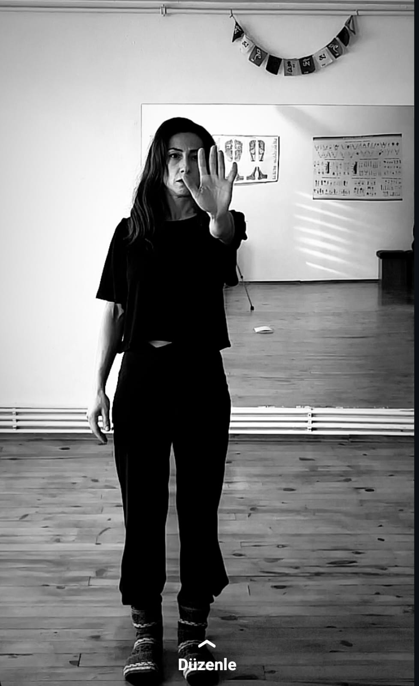

İçsel sesin, zihinsel berraklığın ve bedensel canlılığın ile temas için.
Bireysel buluşmalar, canlı ve online alanlar.
Yaklaşım
İfade, yalnızca bir anlatım süreci değildir; varoluşla ilgilidir. Bedende başlar ve hayata taşınır. İfadenin hayata geçişi, sinir sisteminin güven ve temas kapasitesiyle doğrudan ilişkilidir. Sinir sistemi kendini güvende hissettiği ölçüde ifade açılır, kapanır, kısılır, değişir, çoğalır ya da dönüşür.
Sosyal dinamikler içinde uyumlanırken kişinin özgün yönüyle teması zaman zaman kesintiye uğrayabilir. Bu kopuş, yaşamla kurulan ilişkiyi ve yön duygusunu zayıflatabilir; bedensel, ruhsal ve zihinsel tekrar eden huzursuzluklar olarak kendini gösterebilir.
Bu nedenle ifadeyi "özgünlük" niteliğinde ele alıyorum. Özgün ifadenin hayatta yer bulabilmesi için bedeni, oyunu ve deneyimi sürecin merkezinde tutarak.
Terapi uygulamıyorum. Alan açıyorum.
İfade kapasitesinin sinir sistemi ve duyusal zemini.
Yumuşama ve keşif için spontane alan.
İçsel deneyimin dış dünyada varoluşu.
Kimler İçin?
Özgün İfade Alanı, içsel yönünü yaşamına daha net ve canlı biçimde taşımak isteyenler için.
İç sesini daha net duymak ve zihinsel berraklığa yer açmak istiyorsan
Duygu, istek ve ihtiyaçlarını anlayışla karşılamak ve ifade etmek istiyorsan
Bedensel canlılığın ve zihinsel esnekliğinle kendine bir oyun alanı kurmak istiyorsan
Hayat yönün ve öz benliğinle temasını güçlendirmek istiyorsan
Hayatına özgün benliğini yansıtan bir yön vermeye hazırsan…
Bu alan; tıbbi ya da psikoterapötik destek, klinik tanı veya tedavi süreci sunmaz.

Hakkımda
Beden ve zihinde yer tutan ancak görünürlük kazanamamış ifadelerle çalışıyorum. Hareket, oyun ve ifade pratikleri aracılığıyla; kişinin kendi ritminde özgün ifadesiyle temas kurabileceği güvenli alanlar açıyorum.
Çalışmalarım; sinir sistemi farkındalığına dayalı terapötik bedensel uygulamalardan, farklı ifade pratiklerinden, kadın, genç ve topluluk temelli profesyonel deneyimlerimden beslenir. Bu alanların kesişiminde, deneyim odaklı bir ifade zemini kuruyorum.
Uyuşma, sıkışmışlık, kararsızlık, erteleme ya da zihinsel döngülerde kalma hâllerini bir problem olarak değil; sinir sisteminin koruyucu dili olarak ele alıyorum. Hareket, oyun ve ifade aracılığıyla bu dille yeni bir temas kurmaya ve kişinin kendi özgün ifadesini yeniden keşfetmesine alan açıyorum.
Alanlar
Ortak bir zaman ve çerçevede buluşuruz; ancak süreç bireyseldir. Katılımcı kendi ifade deneyiminde kalır, grup içi etkileşim yer almaz. Çalışma sonunda katılmak isteyenlerle kısa bir paylaşım alanı açılır.
Alana gözatSenin ritminde ilerleyen bireysel buluşmalar. Bedensel farkındalık, hareket ve doğaçlama ifadeler aracılığıyla ifade alanını genişletmeye ve yönünü netleştirmeye odaklanırız.
Ücretsiz ön görüşme alKendi ritminde katılabileceğin, tematik ve derinleşmeye açık ifade odaları.
Odaları keşfetBelirli temalar etrafında tasarlanmış, yüz yüze gerçekleşen derinleşme alanları. Bedensel ifade, yön ve canlılık üzerine yoğunlaşmış deneyimler.
Projeler için ulaşİletişim
Merak ettiklerin, katılım isteğin ya da sadece bir "merhaba" için bana yazabilirsin.